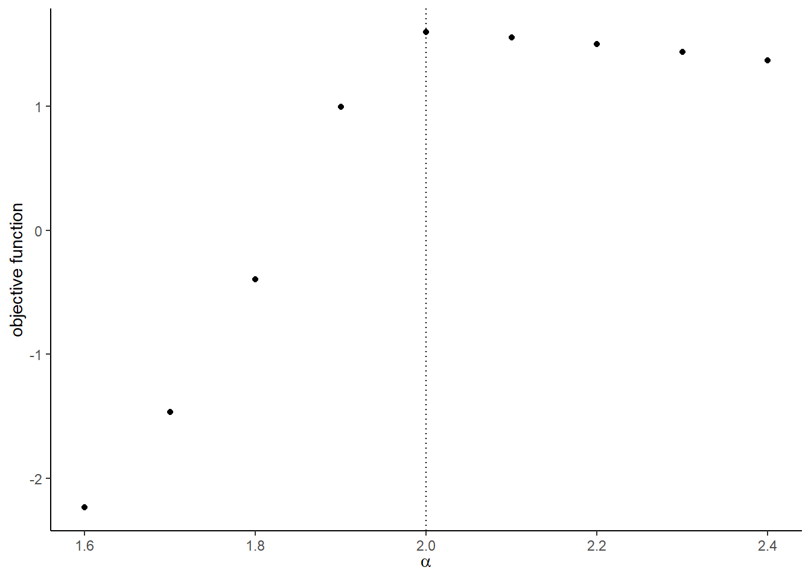
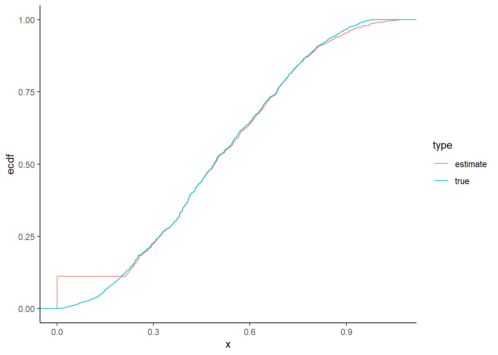

Chapter 19 Assignment 9: Auction
The deadline is May 20 1:30pm.
19.1 Simulate data
We simulate bid data from a second- and first-price sealed bid auctions.
First, we draw bid data from a second-price sealed bid auctions. Suppose that for each auction \(t = 1, \cdots, T\), there are \(i = 1, \cdots, n_t\) potential bidders. At each auction, an auctioneer allocates one item and sets the reserve price at \(r_t\). When the signal for bidder \(i\) in auction \(t\) is \(x_{it}\), her expected value of the item is \(x_{it}\). A signal \(x_{it}\) is drawn from an i.i.d. beta distribution \(B(\alpha, \beta)\). Let \(F_X(\cdot; \alpha, \beta)\) be its distribution and \(f_X(\cdot; \alpha, \beta)\) be the density. A reserve is set at 0.2. \(n_t\) is drawn from a Poisson distribution with mean \(\lambda\). An equilibrium strategy is such that a bidder participates and bids \(\beta(x) = x\) if \(x \ge r_t\) and does not participate otherwise.
- Set the constants and parameters as follows:
# set seed
set.seed(1)
# number of auctions
T <- 100
# parameter of value distribution
alpha <- 2
beta <- 2
# prameters of number of potential bidders
lambda <- 10- Draw a vector of valuations and reservation prices.
# number of bidders
N <- rpois(T, lambda)
# draw valuations
valuation <-
foreach (tt = 1:T, .combine = "rbind") %do% {
n_t <- N[tt]
header <- expand.grid(t = tt, i = 1:n_t)
return(header)
}
valuation <- valuation %>%
tibble::as_tibble() %>%
dplyr::mutate(x = rbeta(length(i), alpha, beta))
ggplot(valuation, aes(x = x)) + geom_histogram(fill = "steelblue", alpha = 0.8)## `stat_bin()` using `bins = 30`. Pick better value with `binwidth`.
# draw reserve prices
reserve <- 0.2
reserve <- tibble::tibble(t = 1:T, r = reserve)- Write a function
compute_winning_bids_second(valuation, reserve)that returns a winning bid from each second-price auction. It returns nothing for an auction in which no bid was above the reserve price. In the output,trefers to the auction index,mto the number of actual bidders,rto the reserve price, andwto the winning bid.
# compute winning bids from second-price auction
df_second_w <-
compute_winning_bids_second(valuation, reserve)
df_second_w## # A tibble: 100 x 5
## t n m r w
## <int> <int> <int> <dbl> <dbl>
## 1 1 8 8 0.2 0.637
## 2 2 10 10 0.2 0.647
## 3 3 7 5 0.2 0.484
## 4 4 11 8 0.2 0.804
## 5 5 14 12 0.2 0.920
## 6 6 12 11 0.2 0.942
## 7 7 11 9 0.2 0.810
## 8 8 9 9 0.2 0.724
## 9 9 14 14 0.2 0.880
## 10 10 11 9 0.2 0.677
## # with 90 more rowsggplot(df_second_w, aes(x = w)) + geom_histogram(fill = "steelblue", alpha = 0.8)## `stat_bin()` using `bins = 30`. Pick better value with `binwidth`.
Next, we simulate bid data from first-price sealed bid auctions. The setting is the same as the second-price auctions expect for the auction rule. An equilibrium bidding strategy is to participate and bid: \[ \beta(x) = x - \frac{\int_{r_t}^x F_X(t)^{N - 1}}{F_X(x)^{N - 1}}, \] if \(x \ge r\) and not to participate otherwise when there are more than one active bidder. If \(x \ge r\) and there is only one bidder, the bidder bids \(r_t\).
- Write a function
bid_first(x, r, alpha, beta, n)that returns the equilibrium bid. To integrate a function, useintegratefunction in R. It returns 0 if \(x < r\).
# compute bid from first-price auction
n <- N[1]
m <- N[1]
x <- valuation[1, "x"] %>% as.numeric(); x## [1] 0.3902289r <- reserve[1, "r"] %>% as.numeric(); r## [1] 0.2b <- bid_first(x, r, alpha, beta, n); b## [1] 0.3596662x <- r/2; x## [1] 0.1b <- bid_first(x, r, alpha, beta, n); b## [1] 0b <- bid_first(1, r, alpha, beta, n); b## [1] 0.7978258- Write a function
compute_bids_first(valuation, reserve, alpha, beta)that returns bids from each first-price auctions. It returns bids below the reserve price.
# compute bid data from first-price auctions
df_first <- compute_bids_first(valuation, reserve, alpha, beta)
df_first## # A tibble: 994 x 7
## t i x r n m b
## <int> <int> <dbl> <dbl> <int> <int> <dbl>
## 1 1 1 0.390 0.2 8 8 0.360
## 2 1 2 0.410 0.2 8 8 0.378
## 3 1 3 0.422 0.2 8 8 0.388
## 4 1 4 0.637 0.2 8 8 0.577
## 5 1 5 0.450 0.2 8 8 0.413
## 6 1 6 0.359 0.2 8 8 0.332
## 7 1 7 0.837 0.2 8 8 0.731
## 8 1 8 0.440 0.2 8 8 0.404
## 9 2 1 0.449 0.2 10 10 0.420
## 10 2 2 0.472 0.2 10 10 0.441
## # with 984 more rowsggplot(df_first, aes(x = b)) + geom_histogram(fill = "steelblue", alpha = 0.8)## `stat_bin()` using `bins = 30`. Pick better value with `binwidth`.
- Write a function
compute_winning_bids_first(valuation, reserve, alpha, beta)that returns only the winning bids from each first-price auction. It will callcompute_bids_firstinside the function. It does not return anything when no bidder bids above the reserve price.
# compute winning bids from first-price auctions
df_first_w <-
compute_winning_bids_first(valuation, reserve, alpha, beta)
df_first_w## # A tibble: 100 x 5
## t n m r w
## <int> <int> <int> <dbl> <dbl>
## 1 1 8 8 0.2 0.731
## 2 2 10 10 0.2 0.638
## 3 3 7 5 0.2 0.525
## 4 4 11 8 0.2 0.818
## 5 5 14 12 0.2 0.842
## 6 6 12 11 0.2 0.833
## 7 7 11 9 0.2 0.772
## 8 8 9 9 0.2 0.753
## 9 9 14 14 0.2 0.849
## 10 10 11 9 0.2 0.803
## # with 90 more rowsggplot(df_first_w, aes(x = w)) + geom_histogram(fill = "steelblue", alpha = 0.8)## `stat_bin()` using `bins = 30`. Pick better value with `binwidth`.
19.2 Estimate the parameters
We first estimate the parameters from the winning bids data of second-price auctions. We estimate the parameters by maximizing a log-likelihood.
\[ l(\alpha, \beta) := \frac{1}{T} \sum_{t = 1}^T \ln\frac{h_t(w_t)^{1\{m_t > 1\}} \mathbb{P}\{m_t = 1\}}{1 - \mathbb{P}\{m_t = 0\}}, \] where: \[ \mathbb{P}\{m_t = 0\} := F_X(r_t)^{n_t}, \] \[ \mathbb{P}\{m_t = 1\} := n_t F_X(r_t; \alpha, \beta)^{n_t - 1} [1 - F_X(r_t; \alpha, \beta)]. \]
\[ h_t(w_t) := n_t (n_t - 1) F_X(w_t; \alpha, \beta)^{n_t - 2} [1 - F_X(w_t; \alpha, \beta)] f_X(w_t; \alpha, \beta). \]
- Write a function
compute_p_second_w(w, r, m, n, alpha, beta)that computes \(\mathbb{P}\{m_t = 1\}\) if \(m_t = 1\) and \(h_t(w_t)\) if \(m_t > 1\).
# compute probability density for winning bids from a second-price auction
w <- df_second_w[1, ]$w
r <- df_second_w[1, ]$r
m <- df_second_w[1, ]$m
n <- df_second_w[1, ]$n
compute_p_second_w(w, r, m, n, alpha, beta)## [1] 2.752949- Write a function
compute_m0(r, n, alpha, beta)that computes \(\mathbb{P}\{m_t = 0\}\).
# compute non-participation probability
compute_m0(r, n, alpha, beta)## [1] 1.368569e-08- Write a function
compute_loglikelihood_second_price_w(theta, df_second_w)that computes the log-likelihood for a second-price auction winning bid data.
# compute log-likelihood for winning bids from second-price auctions
theta <- c(alpha, beta)
compute_loglikelihood_second_price_w(theta, df_second_w)## [1] 0.9849261- Compare the value of objective function around the true parameters.
# label
label <- c("\\alpha", "\\beta")
label <- paste("$", label, "$", sep = "")
# compute the graph
graph <- foreach (i = 1:length(theta)) %do% {
theta_i <- theta[i]
theta_i_list <- theta_i * seq(0.8, 1.2, by = 0.05)
objective_i <-
foreach (j = 1:length(theta_i_list),
.combine = "rbind") %dopar% {
theta_ij <- theta_i_list[j]
theta_j <- theta
theta_j[i] <- theta_ij
objective_ij <-
compute_loglikelihood_second_price_w(
theta_j, df_second_w)
return(objective_ij)
}
df_graph <- data.frame(x = as.numeric(theta_i_list),
y = as.numeric(objective_i))
g <- ggplot(data = df_graph, aes(x = x, y = y)) +
geom_point() +
geom_vline(xintercept = theta_i, linetype = "dotted") +
ylab("objective function") + xlab(TeX(label[i]))
return(g)
}
save(graph, file = "data/A9_second_parametric_graph.RData")load(file = "data/A9_second_parametric_graph.RData")
graph## [[1]]
##
## [[2]]
- Estimate the parameters by maximizing the log-likelihood.
result_second_parametric <-
optim(
par = theta,
fn = compute_loglikelihood_second_price_w,
df_second_w = df_second_w,
method = "L-BFGS-B",
control = list(fnscale = -1)
)
save(result_second_parametric, file = "data/A9_result_second_parametric.RData")load(file = "data/A9_result_second_parametric.RData")
result_second_parametric## $par
## [1] 2.199238 2.078327
##
## $value
## [1] 0.9883372
##
## $counts
## function gradient
## 11 11
##
## $convergence
## [1] 0
##
## $message
## [1] "CONVERGENCE: REL_REDUCTION_OF_F <= FACTR*EPSMCH"comparison <-
data.frame(
true = theta,
estimate = result_second_parametric$par
)
comparison## true estimate
## 1 2 2.199238
## 2 2 2.078327Next, we estimate the parameters from the winning bids data from first-price auctions. We estimate the parameters by maximizing a log-likelihood.
- Write a function
inverse_bid_equation(x, b, r, alpha, beta, n)that returns \(\beta(x) - b\) for a bid \(b\). Write a functioninverse_bid_first(b, r, alpha, beta, n)that is an inverse functionbid_firstwith respect to the signal, that is, \[ \eta(b) := \beta^{-1}(b). \]
To do so, we can use a built-in function called uniroot, which solves \(x\) such that \(f(x) = 0\) for scalar \(x\). In uniroot, lower and upper are set at \(r_t\) and \(\beta(1)\), respectively.
r <- df_first_w[1, "r"] %>%
as.numeric()
n <- df_first_w[1, "n"] %>%
as.integer()
b <- 0.5 * r + 0.5
x <- 0.5
# compute invecrse bid equation
inverse_bid_equation(x, b, r, alpha, beta, n)## [1] -0.1421105# compute inverse bid
inverse_bid_first(b, r, alpha, beta, n)## [1] 0.6653238The log-likelihood conditional on \(m_t \ge 1\) is: \[ l(\alpha, \beta) := \frac{1}{T}\sum_{t = 1}^T \log \frac{h_t(w_t)}{1 - F_X(r_t)^{n_t}}, \] where the probability density of having \(w_t\) is: \[ \begin{split} h_t(w_t) &= n_t F_X[\eta_t(w_t)]^{n_t - 1} f_X[\eta_t(w_t)] \eta_t'(w_t)\\ &= \frac{n_t F_X[\eta_t(w_t)]^{n_t}}{(n_t - 1)[\eta_t(w_t) - w_t]}, \end{split} \] where the second equation is from the first-order condition.
- Write a function
compute_p_first_w(w, r, alpha, beta, n)that returns \(h_t(w)\). Remark that the equilibrium bid at specific parameters isbid_first(1, r, alpha, beta, n). If the observed wining bidwis above the upper limit, the function will issue an error. Therefore, inside the functioncompute_p_first_w(w, r, alpha, beta, n), check ifwis abovebid_first(1, r, alpha, beta, n)and if so return \(10^{-6}\).
# compute probability density for a winning bid from a first-price auction
w <- 0.5
compute_p_first_w(w, r, alpha, beta, n)## [1] 0.2720049upper <- bid_first(1, r, alpha, beta, n)
compute_p_first_w(upper + 1, r, alpha, beta, n)## [1] 1e-06- Write a function
compute_loglikelihood_first_price_w(theta, df_first_w)that computes the log-likelihood for a first-price auction winning bid data.
# compute log-likelihood for winning bids for first-price auctions
compute_loglikelihood_first_price_w(theta, df_first_w)## [1] 1.597414- Compare the value of the objective function around the true parameters.
theta <- c(alpha, beta)
# label
label <- c("\\alpha", "\\beta")
label <- paste("$", label, "$", sep = "")
# compute the graph
graph <- foreach (i = 1:length(theta)) %do% {
theta_i <- theta[i]
theta_i_list <- theta_i * seq(0.8, 1.2, by = 0.05)
objective_i <-
foreach (j = 1:length(theta_i_list),
.combine = "rbind") %do% {
theta_ij <- theta_i_list[j]
theta_j <- theta
theta_j[i] <- theta_ij
objective_ij <-
compute_loglikelihood_first_price_w(
theta_j, df_first_w)
return(objective_ij)
}
df_graph <- data.frame(x = as.numeric(theta_i_list),
y = as.numeric(objective_i))
g <- ggplot(data = df_graph, aes(x = x, y = y)) +
geom_point() +
geom_vline(xintercept = theta_i, linetype = "dotted") +
ylab("objective function") + xlab(TeX(label[i]))
return(g)
}
save(graph, file = "data/A9_first_parametric_graph.RData")load(file = "data/A9_first_parametric_graph.RData")
graph## [[1]]
##
## [[2]]
- Estimate the parameters by maximizing the log-likelihood. Set the lower bounds at zero. Use the Nelder-Mead method. Otherwise the parameter search can go to extreme values because of the discontinuity at the point where the upper limit is below the observed bid.
result_first_parametric <-
optim(
par = theta,
fn = compute_loglikelihood_first_price_w,
df_first_w = df_first_w,
method = "Nelder-Mead",
control = list(fnscale = -1)
)
save(result_first_parametric, file = "data/A9_result_first_parametric.RData")load(file = "data/A9_result_first_parametric.RData")
result_first_parametric## $par
## [1] 1.977676 2.004715
##
## $value
## [1] 1.607161
##
## $counts
## function gradient
## 91 NA
##
## $convergence
## [1] 0
##
## $message
## NULLcomparison <-
data.frame(
true = theta,
estimate = result_first_parametric$par
)
comparison## true estimate
## 1 2 1.977676
## 2 2 2.004715Finally, we non-parametrically estimate the distribution of the valuation using bid data from first-price auctions df_first.
- Write a function
F_b(b)that returns an empirical cumulative distribution atb. This can be obtained by using a functionecdf. Also, write a functionf_b(b)that returns an empirical probability density atb. This can be obtained by combining functionsapproxfunanddensity.
# cumulative distribution
ggplot(df_first, aes(x = b)) + stat_ecdf(color = "steelblue") +
xlab("bid") + ylab("cumulative distribution")
F_b <- ecdf(df_first$b)
F_b(0.4)## [1] 0.4104628F_b(0.6)## [1] 0.7173038# probability density
ggplot(df_first, aes(x = b)) + geom_density(fill = "steelblue")
f_b <- approxfun(density(df_first$b))
f_b(0.4)## [1] 1.680124f_b(0.6)## [1] 1.469983The equilibrium distribution and density of the highest rivals bid are: \[ H_b(b) := F_b(b)^{n - 1}, \] \[ h_b(b) := (n - 1) f_b(b) F_b(b)^{n - 2}. \]
- Write a function
H_b(b, n)andh_b(b)that return the equilibrium distribution and density of the highest rivals bid at pointb.
H_b(0.4, n)## [1] 0.001962983h_b(0.4, n)## [1] 0.05624476When a bidder bids \(b\), the implied valuation of her is: \[ x = b + \frac{H_b(b)}{h_b(b)}. \]
- Write a function
compute_implied_valuation(b, n, r)that returns the implied valuation given a bid. Let it return \(x = 0\) if \(b < r\), because we cannot know the value when the bid is below the reserve price.
r <- df_first[1, "r"]
n <- df_first[1, "n"]
compute_implied_valuation(0.4, n, r)## n
## 1 0.4349007- Obtain the vector of implied valuations from the vector of bids and draw the empirical cumulative distribution. Overlay it with the true empirical cumulative distribution of the valuations.
valuation_implied <- df_first %>%
dplyr::rowwise() %>%
dplyr::mutate(x = compute_implied_valuation(b, n, r)) %>%
dplyr::ungroup() %>%
dplyr::select(x) %>%
dplyr::mutate(type = "estimate")
valuation_true <- valuation %>%
dplyr::select(x) %>%
dplyr::mutate(type = "true")
valuation_plot <- rbind(valuation_true, valuation_implied)
ggplot(valuation_plot, aes(x = x, color = type)) + stat_ecdf()